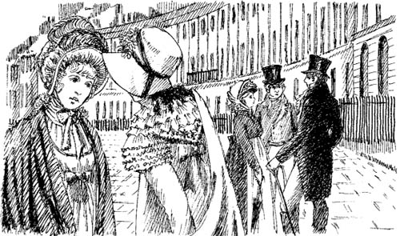
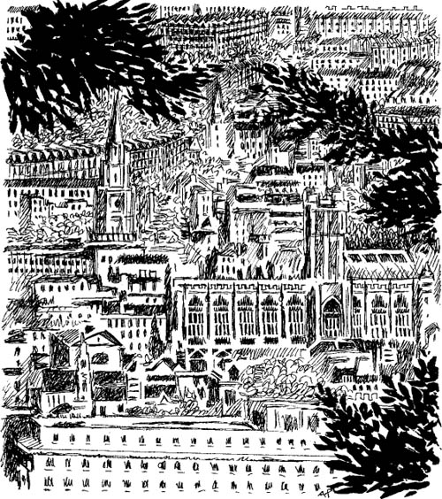

Catherine và gia đình Tilney
Ngày hôm sau là thứ Bảy. Sáng ấy, Catherine thưa với bà Allen.
Hôm nay con sẽ đến thăm chị em cô Tilney, Catherine nói. Con muốn xin lỗi họ. Con muốn kể hết với họ. Hôm qua, con đành phải đi với gia đình anh chị Thorpe.
Được chứ, con gái. Con nên xin lỗi. Con cứ đến gặp cô Tilney đi, bà Allen đáp.
Catherine mặc chiếc váy mới và chiếc mũ mới. Cô đến phố Milsom. Gia đình Tilney sống trong một ngôi nhà trên phố Milsom. Nhưng hôm đó, cô Tilney không có nhà.
Tối hôm đó, Catherine và gia đình Allen đi xem kịch. Gia đình Tilney cũng ở đó! Catherine không xem kịch. Cô chỉ nhìn Henry Tilney. Đôi lúc, anh ấy cũng nhìn lại cô. Nhưng anh ấy không hề mỉm cười.
Vở kịch kết thúc, ông Tilney đến nói chuyện với gia đình Allen.
Ôi, ông Tilney, con thấy rất hối hận, Catherine nói. Con muốn cùng cha con ông đi dạo hôm qua. Nhưng anh Thorpe đã nói dối với con. Anh ấy bảo "Gia đình Tilney đã rời khỏi Bath. Sáng nay anh thấy họ đang đi ra khỏi thành phố". Nhưng thật ra, cha con ông vẫn ở Bath. Con thấy cha con ông đang đi về hướng phố Pulteney.
Đúng vậy, chúng tôi cũng thấy con, Henry Tilney nói. Nhưng con không dừng lại.
Con rất muốn nói chuyện với cha ông. Nhưng anh Thorpe không dừng xe lại. Ôi, ông Tilney, con xin lỗi vô cùng!
Henry Tilney mỉm cười.
Cô Morland thân mến, anh ấy nói. Chúng ta vẫn có thể đi dạo ngoại ô vào ngày khác. Eleanor và anh sẽ đưa con đến Vách đá Beechen. Từ Vách đá Beechen, con sẽ được ngắm cảnh thành phố Bath đẹp tuyệt.
Chiều Chủ nhật, Catherine và James đi dạo dọc Đường Royal Crescent. Isabella và John Thorpe cũng đến đó.
Đột nhiên, Catherine nhìn thấy Eleanor Tilney. Cô rời khỏi anh trai và gia đình Thorpe để đến chỗ Eleanor.

Isabella mỉm cười với James.
Anh Morland, cô ta nói. Ngày mai chúng ta cùng nhau đến Lâu đài Blaize nhé? Sáng mai chúng ta phải rời Bath rất sớm. Anh nghĩ sao?
Ý kiến hay đấy, James đáp.
John Thorpe cười lớn. Ồ, chúng ta phải đi sớm lắm đấy. Chúng ta phải đi vào lúc chín giờ mới được, anh ta nói.
Được lắm! Sáng mai chúng ta sẽ đi, Isabella nói. Chắc Catherine muốn thấy Lâu đài Blaize lắm.
Catherine đã lời chào Eleanor Tilney. Cô đang đi về phía anh trai và gia đình Thorpe.
Cô Catherine thân mến, Isabella nói. Các anh chúng ta sắp đưa chúng ta đến Lâu đài Blaize vào ngày mai.
Con không thể đi vào ngày mai được, Catherine vội nói. Con sẽ đi dạo đến Vách đá Beechen cùng gia đình Tilney.
Không được đâu, chúng ta sẽ đến Lâu đài Blaize đấy! Isabella nói. Con có thể đi dạo cùng gia đình Tilney vào một ngày khác mà. Cô Catherine thân mến, tôi coi cô là bạn. Cô Tilney không phải bạn của cô đâu. Cô đang làm tôi buồn lắm. Cô phải đến Lâu đài Blaize.
Isabella khóc lớn. James thấy những giọt nước mắt của cô ta. Anh ta cau có với em gái.
Cô đúng là chẳng tử tế chút nào, Catherine, James nói. Isabella đã đối xử rất tốt với cô.
Thôi thì mai mốt chúng ta đến lâu đài vào hôm Thứ Ba vậy, Catherine nói.
Không được đâu! John Thorpe nói. Hôm Thứ Ba, em phải trở lại Oxford.
Im lặng trong chốc lát. Rồi Isabella lên tiếng. Cô ta tức giận lắm. Tôi sẽ không đến Lâu đài Blaize nếu thiếu Catherine đâu, cô ta nói. Phải có thêm cô gái nào đó nữa đi cùng chúng ta chứ.
John có thể dẫn một cô em gái khác của mình đi, Catherine nói.
Anh không muốn dẫn em gái mình đi, John Thorpe nói. Anh muốn đưa em đi, Catherine. Anh ta bỏ đi thật.
Catherine, Isabella và James tiếp tục đi bộ trong mười phút. Không ai nói chuyện cả. Rồi John Thorpe chạy trở lại.
Mọi chuyện ổn cả rồi, Catherine, anh ta nói. Anh đã nói chuyện với gia đình Tilney rồi. Con có thể đi dạo cùng họ vào Thứ Ba. Còn ngày mai thì con đi với chúng ta nhé.
Ý tưởng hay đấy, Isabella nói, nở một nụ cười.
Không, không hay, Catherine nói. Con sẽ đi theo Eleanor và tự mình nói chuyện với cô ấy.
Catherine tức giận lắm. Cô bước đi thật nhanh, nhưng đường rất đông. Cô chẳng thể thấy Eleanor đâu. Cô chạy dọc theo phố Milsom. Cửa nhà của gia đình Tilney đang mở. Catherine cứ đi vào thẳng chứ không dừng lại. Cô bước vào trong nhà và chạy lên lầu. Cô mở một cánh cửa. Trong phòng, Henry và Eleanor đang nói chuyện với cha của mình.
Con rất lấy làm tiếc, Catherine vội nói. Con sẽ không đi với gia đình Thorpe vào ngày mai. Con muốn đi với cha con ông đến Vách đá Beechen!
Cô Morland thân mến, xin con hãy ngồi xuống, Tướng Tilney nói. Cô được chào đón tại đây.
Tin nhắn của cha làm con ngạc nhiên lắm, Eleanor nói. Nhưng giờ con đã hiểu – tin nhắn chuyển đi bị nhầm lẫn mất rồi. Ngày mai chúng ta có thể đi dạo đến Vách đá Beechen. Henry đồng ý chứ?
Henry Tilney cúi chào và mỉm cười với Catherine.
Tôi sẽ đưa cả hai người đi, anh ấy nói.
Catherine rất thích chuyến thăm Vách đá Beechen. Eleanor Tilney là cô gái trầm lặng. Henry Tilney là chàng trai sáng dạ. Anh nói chuyện rất hay. Catherine rất mến Eleanor và Henry Tilney.

Cuối buổi chiều, gia đình Tilney đưa Catherine trở lại phố Pulteney.
Xin hãy đến dùng bữa tối với chúng tôi, Eleanor nói. Cô đến được tối thứ Tư chứ?
Được chứ!, Catherine đáp lời. Và cô rất vui vẻ.
Nội dung
- Trang tiêu đề
- Trang bản quyền
- Mục lục
- Ghi chú về tác giả
- Ghi chú về câu chuyện này
- Những người trong câu chuyện này
- 1 Catherine tới Bath
- 2 Những người bạn mới của Catherine
- 3 John và James
- 4 Một vũ hội tại Upper Rooms
- 5 'Tại sao anh lại nói dối tôi?'
- 6 Catherine và gia đình Tilney
- 7 Isabella đang yêu
- 8 Đại úy Frederick Tilney
- 9 Isabella và James
- 10 Tu viện Northanger
- 11 'Cô Morland thân mến của tôi!'
- 12 Một chuyến viếng thăm Woodston
- 13 Một lá thư từ Isabella
- 14 Catherine trở về nhà
- 15 'Cô sẽ lấy tôi chứ?'